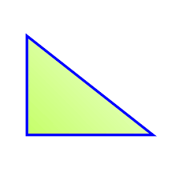
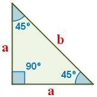
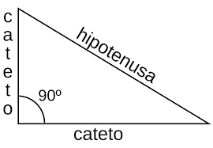
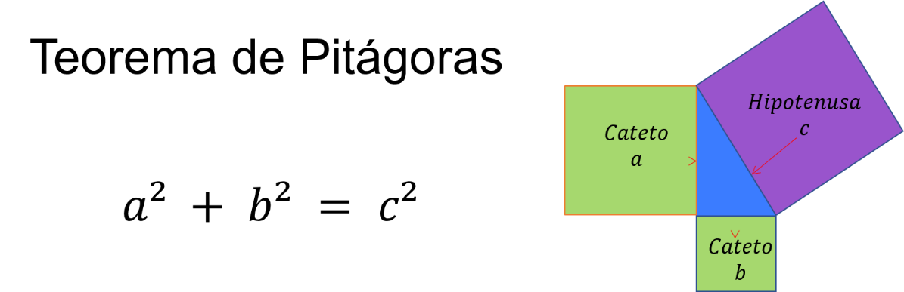

Ractángulo
Un triángulo rectángulo es un tipo de triángulo que contiene un ángulo recto, es decir, un ángulo que mide exactamente 90 grados. Este ángulo recto se forma entre dos de los lados del triángulo, que se conocen como los catetos. El tercer lado del triángulo se llama la hipotenusa y está opuesto al ángulo recto.

Características principales del triángulo escaleno:
- Ángulo recto: El ángulo recto, que mide 90 grados, es una de las características principales del triángulo rectángulo. Es el ángulo más grande en este tipo de triángulo y se forma entre los dos catetos.

- Catetos: Los catetos son los dos lados del triángulo que forman el ángulo recto. Estos lados son
perpendiculares entre sí y se denominan cateto adyacente (el lado que se encuentra junto al ángulo recto) y cateto opuesto (el lado opuesto al ángulo recto).
- Hipotenusa: La hipotenusa es el lado más largo del triángulo y se encuentra opuesto al ángulo recto. La hipotenusa es el lado que conecta los extremos de los catetos.

- Teorema de Pitágoras: El teorema de Pitágoras es una relación matemática importante que se aplica exclusivamente a los triángulos rectángulos. Establece que la suma de los cuadrados de los catetos es igual al cuadrado de la hipotenusa. Matemáticamente, se puede expresar como a^2 + b^2 = c^2, donde "a" y "b" son las longitudes de los catetos y "c" es la longitud de la hipotenusa.

- Propiedades trigonométricas: Los triángulos rectángulos también son fundamentales en trigonometría, ya que permiten definir y calcular las funciones trigonométricas básicas: seno, coseno y tangente. Estas funciones relacionan los ángulos de un triángulo rectángulo con las proporciones de los lados.
Los triángulos rectángulos tienen numerosas aplicaciones en matemáticas, física, ingeniería y otras disciplinas. Son especialmente útiles para resolver problemas relacionados con la medición de distancias, cálculo de áreas y volúmenes, navegación y diseño estructural, entre otros campos.